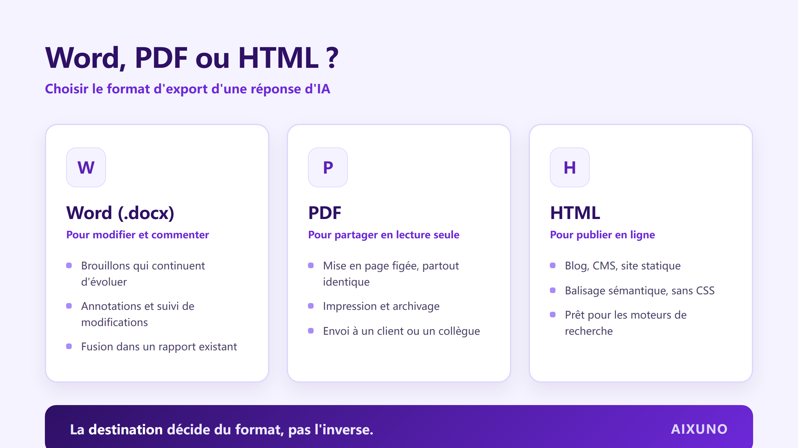

Guide de flux IA
Exporter une réponse d’IA
Une réponse d’IA utile ne devrait pas disparaître dans un historique de chat. Enregistrez-la dans un format adapté pour pouvoir la modifier, la partager ou la réutiliser comme connaissance.

Choisir d’après ce qui vient après
La plupart des erreurs d’export viennent d’un format de sortie mal assorti à la suite du parcours. Quatre destinations couvrent presque tous les cas.
| Ce qui vient après | Meilleur format | Pourquoi |
|---|---|---|
| Un collègue modifie ou commente | Word (.docx) | Suivi des modifications et commentaires n’existent que dans un document modifiable |
| Vous l’archivez ou l’envoyez à un client | La mise en page reste figée sur tous les appareils | |
| Il va dans un blog ou une landing page | HTML | Conserve les balises sémantiques qu’un CMS peut styler |
| Il devient une note de longue durée | Markdown | Le texte brut survit à tous les éditeurs et au versionnement |
Ce qui dérape habituellement
- Imprimer la fenêtre de chat directement en PDF conserve l’en-tête du site, la barre latérale et les bulles de messages.
- La capture d’écran en PDF donne des images : le texte ne pourra plus être recherché ni copié.
- Coller du texte enrichi dans Word garde la police du navigateur, qui entre en conflit avec les styles du document.
Checklist avant l’export
- Retirez de la réponse les passages inutiles — les modèles produisent rarement exactement ce qui a été demandé.
- Vérifiez les niveaux de titres : un seul titre de niveau 1 par document, tout le reste imbriqué en dessous.
- Examinez tableaux et blocs de code dans l’aperçu : ce sont les éléments qui cassent en premier.
Questions sur le choix du format
Quel format envoyer à un client ?
Le PDF, parce que la mise en page reste identique sur tous les appareils et ne peut pas être modifiée par erreur.
Pourquoi ne pas imprimer la fenêtre de chat en PDF ?
La page imprimée emporte l’en-tête du site, les bulles de messages et souvent l’URL de la page — rien de tout cela n’a sa place dans un livrable.
Puis-je exporter deux fois la même réponse ?
Oui. La saisie reste dans l’éditeur : vous pouvez générer Word d’abord, puis PDF à partir du même texte.
Quand l’export échoue
- Le fichier téléchargé est vide. L’éditeur était vide au moment de l’export ; l’action ne devient disponible qu’une fois le contenu présent.
- Le mauvais format est sorti. Chaque outil exporte un seul format : changez d’outil plutôt que de chercher un sélecteur de format.
- Les images manquent. L’export de texte n’emporte jamais les images, quel que soit le format. Enregistrez-les séparément et placez-les dans le document ensuite.